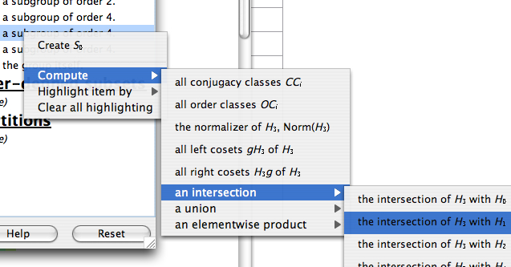
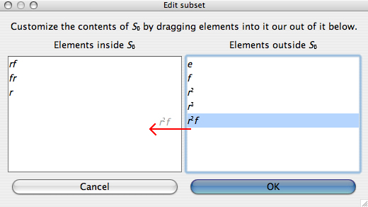
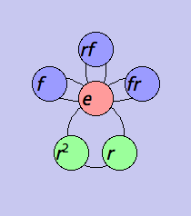

Subset controls
Every visualizer in Group Explorer except objects of symmetry have a panel like the one shown below for examining subgroups of the group under study.

The subsets panel for the eight-element quaternion group. |
The topmost portion of the subsets pane lists all the subgroups of the current group, beginning with H0, the trivial (one-element) subgroup, and ending with Hn, the whole group, where n+1 is the number of subgroups the group has. Group Explorer computes all subgroups of each group when loading it; the user cannot add or remove any entries from this section.
The next portion of the window lists user-defined subsets, which by default is empty. You can add and delete subsets relevant to your study of the group; see below.
The last portion of the window lists partitions of the group (e.g. conjugacy classes, cosets of a particular subgroup, etc.) and is particularly useful for creating informative highlightings of the visualizer. Partitions can be added to this section via various computations; see below. |
The subsets panel allows computations and highlighting with respect to both subsets and subgroups of whatever group is being visualized. It has many features, which I elaborate one at a time below.
Elements of the subgroups
For any subset listed in the pane, you can find out its list of elements by using the application-wide "What's this?" help system. There are three ways to do this.
- Double-click the subset you're interested in. This is certainly the simplest thing to do, except in the case when the subset is a user-defined subset, in which case double-clicking will actually begin editing it (see below).
- Click the What's this?
 button in the toolbar, and then use your mouse pointer (now decorated with a question mark) to click on the subset you're interested in. Its list of elements will appear.
button in the toolbar, and then use your mouse pointer (now decorated with a question mark) to click on the subset you're interested in. Its list of elements will appear.
- Highlight the subset you're interested in with your mouse, then press Shift-F1.
For more information about "What's this?" help in general, read its help page.
The popup menu
Right-clicking on the subsets pane brings up a menu from which you can do several different important actions, some of which are visible in the following screenshot.

Creating and deleting user-defined subgroups are possible using this menu, as well as several types of computation and highlighing. Here follows the documentation for every option you will find on this menu.
Topmost items on the menu
Edit list of elements in Si
This menu item only appears if you right-clicked on a user-defined subset. If you choose it, a window like the one pictured here opens.

The left pane shows the elements in your subset, and the right pane shows the other elements of the group. To add elements to your subset, drag them in from right to left, as suggested by the red arrow drawn on the picture above. Dragging from the left pane to the right pane takes elements out of your subset. OK approves your changes, and Cancel discards them.
Delete Si
This menu item only appears if you right-clicked on a user-defined subset. Choosing it deletes the user-defined subset on which you right-clicked. As with all actions in a large visualizer, this can be undone using the Undo button on the large visualizer toolbar.
button on the large visualizer toolbar.
Delete CCi, OCi, gHi, etc.
This menu item only appears if you right-clicked on a partition (i.e. on one of its sets). Partitions can be conjugacy classes CCi, order classes OCi, left cosets giH, or right cosets Hgi. Choosing it deletes the entire partition on which you right-clicked (e.g. all conjugacy classes, all order classes, or all left/right cosets of the subgroup, etc.). As with all actions in a large visualizer, this can be undone using the Undo button on the large visualizer toolbar.
Create Si
This menu item creates a new subset under the "User-defined subsets" heading. The subset will be empty, and you can add elements to it as described above.
The Compute > submenu
Compute > all conjugacy classes CCi
This submenu item only appears if you have not already asked Group Explorer to perform this computation. It adds the set of conjugacy classes as a new partition under the "Partitions" heading.
Compute > all order classes OCi
This submenu item only appears if you have not already asked Group Explorer to perform this computation. It adds the set of order classes as a new partition under the "Partitions" heading.
Compute > normalizer of X, Norm(X)
This submenu item appears when you right-click on the subset X, but only if you have not already asked Group Explorer to perform this computation. It adds the normalizer of the given subset to the list of user-defined subsets.
Note that whenever you add a new subset, Group Explorer always checks whether it exists under another name, and gives you the option to cancel your addition if so.
Compute > closure of X, <X>
This submenu item appears when you right-click on the subset X, but only if the subset on which you right-clicked is not a subgroup. It adds the closure of the given subset to the list of user-defined subsets.
Note that whenever you add a new subset, Group Explorer always checks whether it exists under another name, and gives you the option to cancel your addition if so.
Compute > left cosets giX
This submenu item appears when you right-click on the subset X, but only if you have not already asked Group Explorer to perform this computation, and the subset on which you right-clicked is a subgroup. It adds the set of left cosets as a new partition under the "Partitions" heading.
Compute > right cosets Xgi
This submenu item appears when you right-click on the subset X, but only if you have not already asked Group Explorer to perform this computation, and the subset on which you right-clicked is a subgroup. It adds the set of right cosets as a new partition under the "Partitions" heading.
Compute > an intersection > subsubmenu
This submenu appears when you right-click no the subset X, and it contains items allowing you to perform an intersection of X with any other subset listed in the whole pane, provided that you have not already requested such a computation. Choosing one of the items on this submenu computes the intersection described in that item, e.g. "the intersection of H2 with S5." Intersection here means simply what it does in set theory--the elements in common between the two sets.
Note that whenever you add a new subset, Group Explorer always checks whether it exists under another name, and gives you the option to cancel your addition if so.
Compute > a union > subsubmenu
This submenu appears when you right-click no the subset X, and it contains items allowing you to perform a union of X with any other subset listed in the whole pane, provided that you have not already requested such a computation. Choosing one of the items on this submenu computes the union described in that item, e.g. "the union of H2 with S5." Union here means simply what it does in set theory--the combined elements from the two sets.
Note that whenever you add a new subset, Group Explorer always checks whether it exists under another name, and gives you the option to cancel your addition if so.
Compute > an elementwise product > subsubmenu
This submenu appears when you right-click no the subset X, and it contains items allowing you to perform an elementwise product of X with any other subset listed in the whole pane, provided that you have not already requested such a computation. Choosing one of the items on this submenu computes the elementwise product described in that item, e.g. "the elementwise product of H2 with S5."
Note that whenever you add a new subset, Group Explorer always checks whether it exists under another name, and gives you the option to cancel your addition if so.
The Morphisms > submenu
The morphism submenu only appears if the large visualizer containing the subset pane is connected to a small visualizer appearing in a sheet, and that small visualizer has one or more morphisms for which it is either the domain or codomain.
Push X through f into G, giving f[X]
A submenu item of this form appears for every morphism f whose domain is the small visualizer associated with the large visualizer containing this subset pane. Choosing it causes Group Explorer to compute the image of X under f, and to add that subset to the subset pane for the codomain visualizer.
Note: The codomain is a different visualizer, so you will see no change in the subsets pane you right-clicked; you will need to open the other visualizer to see the new subset you created.
Note that whenever you add a new subset, Group Explorer always checks whether it exists under another name, and gives you the option to cancel your addition if so. This holds true even in this case, when you may not be looking at the pane into which the new subset is being introduced.
Pull X back through f into G, giving f-1[X]
A submenu item of this form appears for every morphism f whose codomain is the small visualizer associated with the large visualizer containing this subset pane. Choosing it causes Group Explorer to compute the preimage of X under f, and to add that subset to the subset pane for the domain visualizer.
Note: The domain is a different visualizer, so you will see no change in the subsets pane you right-clicked; you will need to open the other visualizer to see the new subset you created.
Note that whenever you add a new subset, Group Explorer always checks whether it exists under another name, and gives you the option to cancel your addition if so. This holds true even in this case, when you may not be looking at the pane into which the new subset is being introduced.
Highlight subset by > submenu
This submenu appears only if you click on a subset (as opposed to a heading). Its items depend on the visualizer as follows.
- For Cayley diagrams, highlighting options are
Node color,
 Ring around node, and
Ring around node, and
 Square around node.
Square around node.
- For multiplication tables, highlighting options are
 Background,
Background,
 Border, and
Border, and
 Corner.
Corner.
- For cycle graphs, highlighting options are
Background,
Border, and
Top.
Choosing one causes the subset on which you right-clicked to be highlighted in the visualizer (both its large and small incarnations) with the method you selected. For instance, here is a multiplication table with an order-4 subgroup highlighted according to Corners.

Note that this undoes any other highlighting of the type in question (e.g. former "Node color" highlighting will evaporate when new "Node color" highlighting is chosen).
Note further that in multiplication tables, highlighting items by background highlighting removes the default coloration scheme (e.g. rainbow, grayscale).
You can undo this highlighting two ways. The first is using the Undo button on the toolbar, which works for all changes to all visualizers. The second is to use the "Clear all highlighting" option on this same menu (see below).
Highlight partition by > submenu
This submenu appears only if you click on a partition (i.e. on one of its sets). Its items depend on the visualizer in the same way as described above.
Choosing one causes the partition on which you right-clicked to be highlighted in the visualizer (both its large and small incarnations) with the method you selected, using a different color for each set in the partition. For instance, here is a cycle graph with the conjugacy class partition highlighted according to Background.

Note that this undoes any other highlighting of the type in question (e.g. former "Node color" highlighting will evaporate when new "Node color" highlighting is chosen).
Note further that in multiplication tables, highlighting items by background highlighting removes the default coloration scheme (e.g. rainbow, grayscale).
You can undo this highlighting two ways. The first is using the Undo button on the toolbar, which works for all changes to all visualizers. The second is to use the "Clear all highlighting" option on this same menu (immedately below).
Clear all highlighting
Removes all highlighting of any type from the visualizer. (Types are listed above.) If you choose this option by mistake, you can simply choose Undo, as with any other action you take on the visualizer.
Quick help links:
Contents | Getting Started | Tutorials | User Manual | Miscellaneous Reference
GE terminology | Help on help